El Sol II: capas y actividad
Del núcleo a 15 millones de Kelvin hasta la corona —paradójicamente más caliente que la superficie—. Cómo viaja la energía hacia afuera, cómo espiamos el interior con vibraciones y neutrinos, y por qué el Sol tiene manchas, tormentas y un ciclo magnético de 11 años.
Las estrellas, como los ogros de Shrek, tienen capas: son cebollas. De adentro hacia afuera el Sol se organiza en núcleo, zona radiativa, zona convectiva, fotósfera, cromósfera y corona. En esta clase recorremos esa cebolla completa, vemos cómo la energía generada por la fusión tarda ~170.000 años en llegar a la superficie, cómo sabemos lo que hay adentro sin poder mirarlo (ecuaciones de estructura, heliosismología, neutrinos) y cerramos con la parte más dinámica: manchas, llamaradas, eyecciones de masa coronal, viento solar y el ciclo magnético de 11 años explicado por el dínamo de Babcock.
La cebolla solar: mapa de capas
Seis regiones, de adentro hacia afuera, definidas por temperatura y densidad.
Las diferencias de temperatura y densidad a distinta profundidad definen una estructura de capas en el plasma solar. El orden, desde el centro hacia afuera, es:
- Núcleo — donde ocurre la fusión nuclear (0 a ~0,2 R☉).
- Zona radiativa — la energía viaja por difusión radiativa (~0,2 a ~0,7 R☉).
- Zona convectiva — la energía viaja en celdas de convección (~0,7 R☉ a la superficie).
- Fotósfera — la “superficie” visible, donde los fotones por fin escapan.
- Cromósfera — atmósfera baja, más caliente que la fotósfera.
- Corona — atmósfera extendida y difusa, a millones de Kelvin.
Entre la zona radiativa y la convectiva hay una interfaz delgada con nombre propio: la tacoclina (tachocline en inglés), y entre la cromósfera y la corona hay una zona de transición donde la temperatura se dispara. La corona, además, se extiende mucho más allá de lo que muestra cualquier imagen a escala del disco solar.
Piensa el Sol como un sistema térmico con una fuente de calor central y dos mecanismos de transporte en serie: primero un medio ópticamente denso donde el calor difunde (análogo a conducción/difusión, lentísimo), y después un fluido inestable donde conviene convectar (como el agua de un hervidor). El cambio de régimen ocurre donde la convección se vuelve más eficiente que la radiación: esa frontera es la tacoclina.
Interior: núcleo, zona radiativa y convectiva
15 millones de Kelvin, una sopa de electrones y 170.000 años de viaje.
El núcleo (0 – 0,2 R☉)
En el centro hay ~15 millones de Kelvin: la temperatura necesaria para que los núcleos de hidrógeno venzan su repulsión eléctrica y se fusionen en helio vía la cadena protón–protón (vista en la clase anterior). El núcleo es extremadamente denso —ahí se concentra la mayor parte de la masa— y ocupa aproximadamente el 20% del radio solar.
La zona radiativa (0,2 – 0,7 R☉)
Sobre el núcleo, la energía se transporta por difusión radiativa. El plasma está tan ionizado y denso en electrones libres que un fotón avanza menos de un milímetro antes de chocar con un electrón y ser desviado en una dirección aleatoria. El resultado es un random walk (camino aleatorio): si el fotón pudiera salir en línea recta, cruzaría el radio solar en ~2 segundos; en la práctica tarda, en promedio, ~170.000 años en llegar a la superficie.
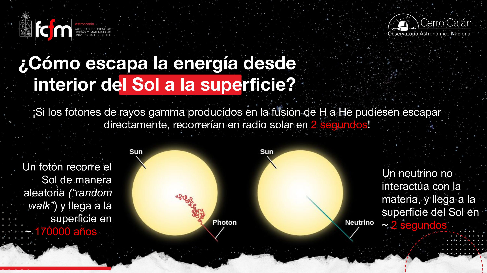
El tiempo de difusión escala como , donde es el camino libre medio. Es la misma matemática de un paseo aleatorio o de la difusión de calor: para recorrer una distancia a pasos de largo se necesitan pasos, no . Puedes jugar con los números en el widget de difusión.
La tacoclina y la zona convectiva (0,7 R☉ – superficie)
Al llegar a ~0,7 R☉ el régimen cambia: cruzamos la tacoclina y entramos a la zona convectiva. Aquí la energía sube en celdas de convección, como el agua hirviendo: burbujas de gas caliente (menos denso) flotan hacia la superficie, se enfrían, y el gas “frío” —que sigue estando a miles de Kelvin, unos 4.000 K contra los ~5.800 K del material que sube— se hunde para volver a calentarse. No hay transferencia neta de masa hacia afuera: el material circula.
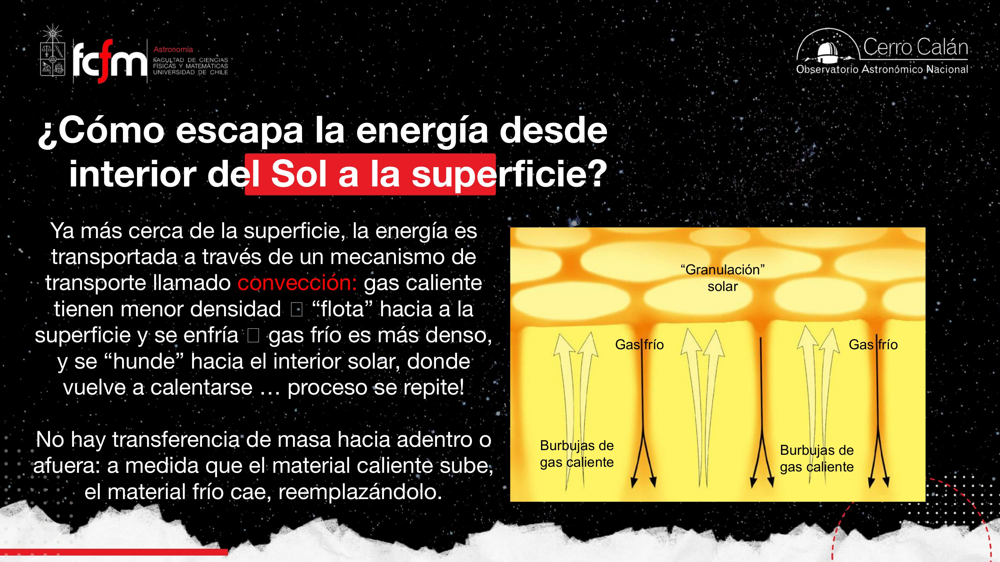
La tacoclina apareció en clase con varios nombres tentativos (“taco línea”, “tacoclínica”). El término correcto en español es tacoclina: la interfaz de transición entre el transporte radiativo y el convectivo. Es además una región clave para el dínamo solar (sección 9), porque allí el perfil de rotación cambia bruscamente.
Fotósfera: la superficie visible
5.800 K, solo 400 km de espesor, y el lugar donde los fotones por fin se liberan.
La fotósfera es la superficie visible del Sol: la última capa donde los fotones, tras su viaje de milenios, encuentran una densidad tan baja que ya no son absorbidos y escapan libremente al espacio. Es lo que vemos al mirar el Sol con un telescopio con filtro solar en luz óptica.
- Temperatura: ~5.800 K (la profesora aprendió 5.777 K; para efectos del curso, “~5.700–5.800 K” está bien: importan los órdenes de magnitud).
- Densidad: menor que la de la atmósfera terrestre.
- Espesor: tan solo ~400 km — más o menos la distancia de Santiago a La Serena. Una capa delgadísima comparada con el radio solar (696.000 km).
En la fotósfera se ven dos estructuras características: las manchas solares (el “acné” del disco solar, que estudiaremos en la sección 8 porque son fenómenos magnéticos) y, con buen poder de resolución, la granulación: la cara visible de las celdas convectivas que suben y bajan justo debajo.
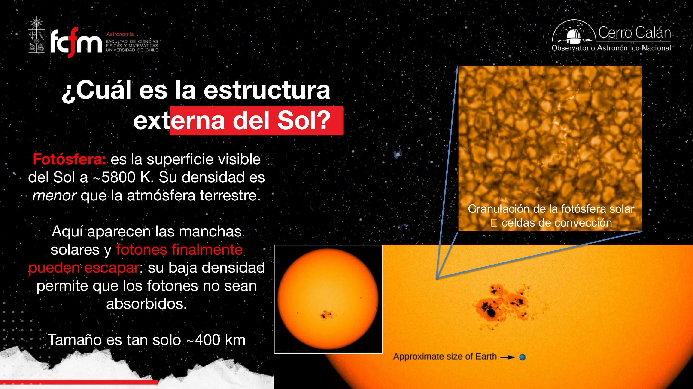
Con el telescopio del observatorio y un filtro solar se ve exactamente esto. Si usas lentes de eclipse de cartón: sirven también sin eclipse (se pueden ver manchas grandes), pero no mires más de ~2 minutos seguidos —el filtro delgado se calienta y se degrada— y no reutilices el mismo lente por años, porque pierde seguridad.
Cromósfera, zona de transición y corona
La paradoja solar: alejándose de la fuente de calor… la temperatura sube.
La intuición dice que al alejarse del núcleo el Sol debería enfriarse, y hasta la fotósfera así ocurre. Pero desde ahí hacia afuera la temperatura vuelve a subir, por efecto de los campos magnéticos. Este es uno de los resultados más contraintuitivos de la clase.
Cromósfera (~10⁴ K, 2.000–3.000 km)
Justo sobre la fotósfera está la cromósfera, a temperaturas del orden de 10.000 K. Al estar más caliente emite a mayores energías: es difícil de ver en el óptico y se observa principalmente en ultravioleta (las imágenes UV de la NASA y los observatorios solares muestran sobre todo cromósfera). Su espesor es de 2.000–3.000 km: Chile, con sus ~4.300 km de largo, es más largo que el grosor de la cromósfera.
Zona de transición (decenas de km)
Entre la cromósfera y la corona hay una capa delgadísima —decenas de kilómetros— donde la temperatura se dispara brutalmente: de ~10⁴ K a ~10⁶ K.
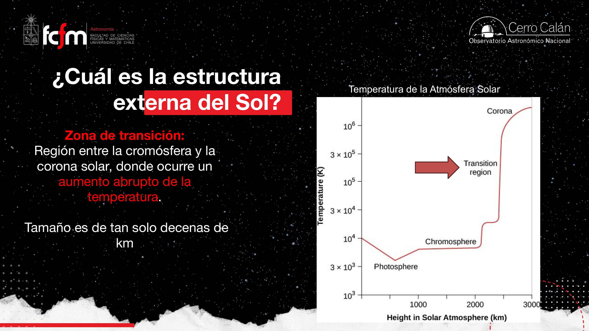
Corona (~10⁶ K, > 10⁶ km)
La corona es la capa más externa: un gas muy difuso (~10⁶ átomos/cm³, contra ~10¹⁹ átomos/cm³ de la atmósfera terrestre: trece órdenes de magnitud menos) pero a millones de Kelvin, por lo que emite en rayos X. Se extiende por más de un millón de kilómetros.
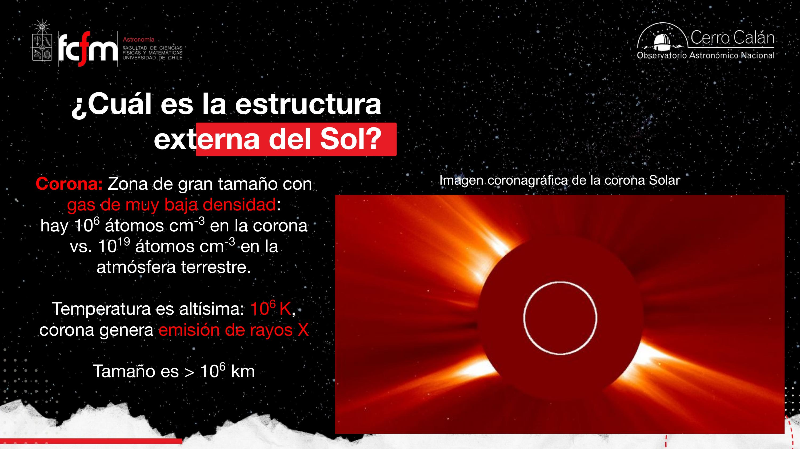
La convección mueve plasma ionizado: cargas en movimiento que generan e inducen campos magnéticos, sumadas a la rotación rápida del Sol (el ecuador gira en ~25 días). En las capas externas las líneas de campo se enrollan, forman nudos que concentran el campo y producen “latigazos magnéticos”: nano-llamaradas y reconexiones constantes que aceleran las partículas. Más velocidad de las partículas = más energía cinética = más temperatura. El calentamiento coronal es, en esencia, un efecto magnético, no térmico-difusivo.
Es como calentar partículas en un acelerador o confinarlas en un tokamak: con campos electromagnéticos puedes acelerar y confinar partículas cargadas, elevando la energía cinética del conjunto —su temperatura— sin necesidad de contacto térmico. En la corona el “circuito de potencia” son las líneas de campo tensadas y reconectadas por el movimiento del plasma.
Viento solar, auroras y heliosfera
El Sol no termina en la corona: sopla partículas que llegan hasta nosotros.
De la corona escapa continuamente el viento solar: partículas cargadas (electrones y protones) que la gravedad solar no logra retener y salen disparadas a velocidades de hasta ~400 km/s. Ese viento:
- Interactúa con la magnetósfera de los planetas.
- Genera la cola ionizada de los cometas, que siempre apunta en dirección opuesta al Sol (no “hacia atrás” del movimiento del cometa).
- Al chocar con el campo magnético terrestre produce tormentas geomagnéticas, y las partículas guiadas hacia los polos generan auroras.
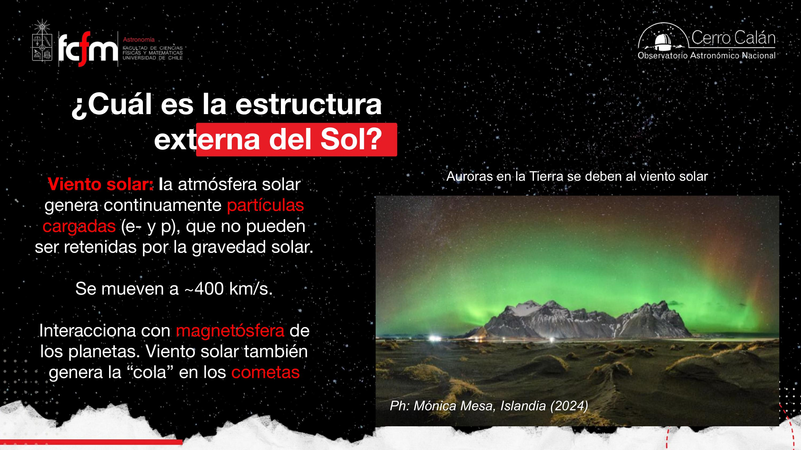
Las auroras se pueden pronosticar: el viento solar se mide, sus partículas viajan a velocidad conocida, y una eyección potente tarda un tiempo predecible en llegar a la Tierra (del orden de días). Midiendo la intensidad del evento en el Sol se estima la magnitud de la tormenta geomagnética y la probabilidad de auroras.
La influencia del Sol —gravitacional y magnética— define una burbuja: la heliosfera, cuyo borde es la heliopausa. Más allá quedan el cinturón de Kuiper y, mucho más lejos, la nube de Oort. Las sondas Voyager recién están cruzando ese límite; allí se han medido temperaturas de decenas de miles de Kelvin (un estudiante mencionó ~30.000–50.000 K; la clase lo atribuyó a la influencia magnética del Sol, posiblemente asociada a su actividad). Ojo: “temperatura” alta con densidad bajísima no implica mucho calor transferible —igual que en la corona—.
Modelando el interior: ecuaciones de estructura
Cuatro ecuaciones diferenciales que describen la estrella capa por capa.
El Sol es una bola de plasma ionizado, estable: está en equilibrio hidrostático (la presión hacia afuera balancea la gravedad hacia adentro) y en balance radiativo (genera la misma energía que libera). Con esas condiciones se construyen modelos resolviendo las ecuaciones de estructura estelar: cuatro ecuaciones diferenciales que describen cómo varían los parámetros de la estrella en función de la distancia al centro. Cuando veas derivadas, piensa tasas de cambio:
Las otras dos son la conservación de energía (cuánta luminosidad se genera en cada capa) y el transporte de energía (radiativo o convectivo, la más compleja de las cuatro). Las condiciones de borde se conocen por observaciones astronómicas: masa, radio, luminosidad y temperatura superficial del Sol.
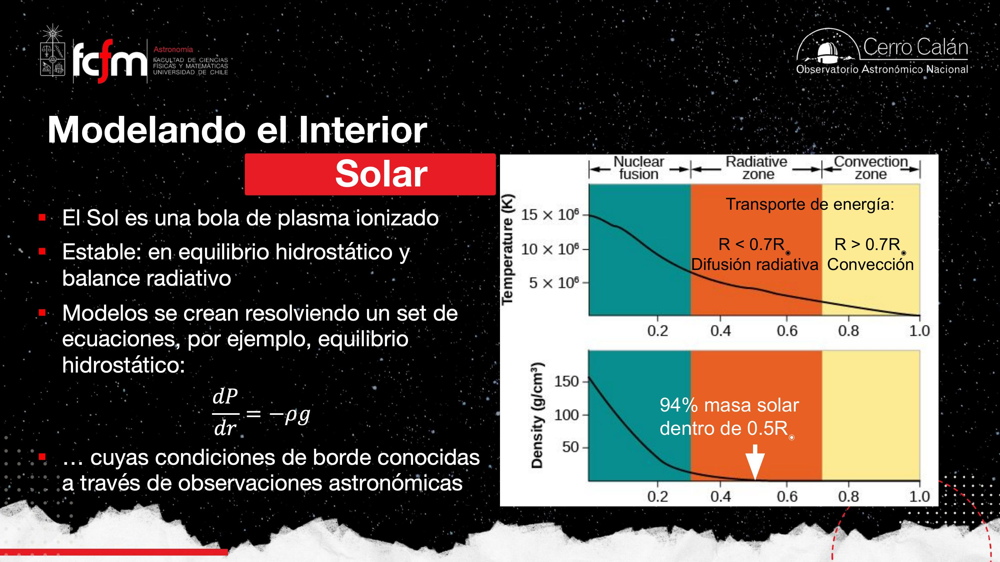
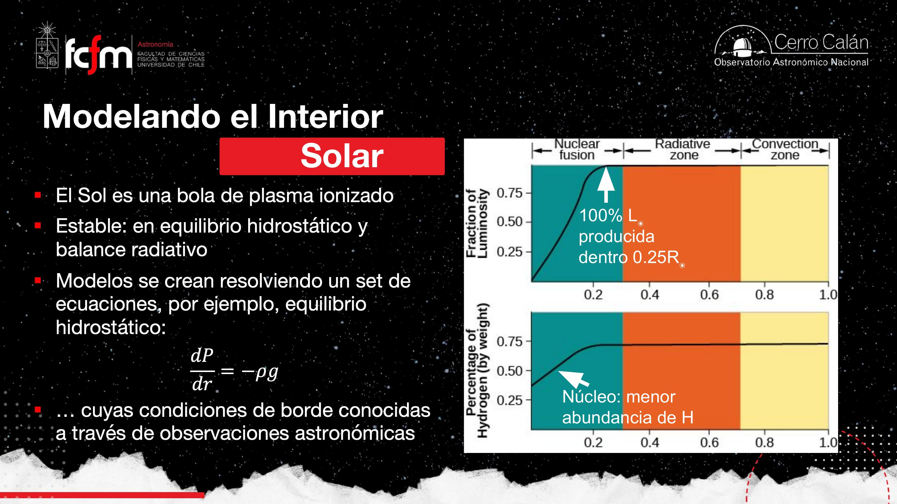
Las ecuaciones nacieron de la teoría (y mejoraron mucho con la mecánica cuántica). La contraparte observacional inicial era indirecta: la energía calculada coincidía con la energía que recibimos del Sol. La confirmación directa del interior llegó después, con la heliosismología y los neutrinos (sección 7).
Heliosismología y neutrinos
Dos formas de “ver” un interior al que nunca podremos asomarnos.
Heliosismología: sismos en el Sol
Igual que los geofísicos deducen el interior de la Tierra (¡incluido su núcleo de hierro!) estudiando cómo las ondas P y S de los terremotos cambian de velocidad y forma al atravesar las capas, la heliosismología estudia las vibraciones y oscilaciones del Sol. Los patrones de oscilación dependen de la velocidad del sonido en el medio, que a su vez depende de la densidad, presión, temperatura y composición. En la práctica, se mide el efecto Doppler del material solar subiendo y bajando en la superficie. Aplicada a otras estrellas, la técnica se llama astrosismología. Sus resultados concuerdan muy bien con los modelos matemáticos: la teoría quedó soportada por la observación.
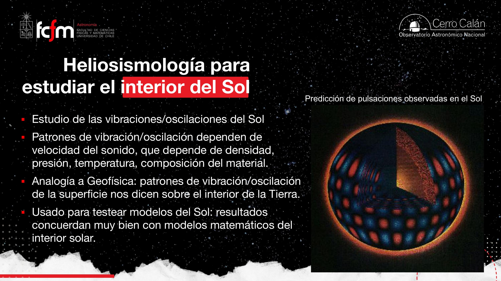
Neutrinos: mensajeros del núcleo
La cadena protón–protón produce neutrinos, partículas con sección eficaz ínfima (el “área de interacción” alrededor de la partícula), casi sin masa y a velocidad cercana a la de la luz. Casi no interactúan con nada: salen del núcleo y llegan a la Tierra en línea recta. Para dimensionar: 1 cm de plomo frena rayos X, pero se necesitaría una placa de plomo de un parsec de espesor para frenar neutrinos. Se detectan vía radiación de Cherenkov: el destello azul que emite una partícula cargada al moverse más rápido que la luz en ese medio (el mismo brillo azul de los reactores nucleares y de detectores como IceCube).
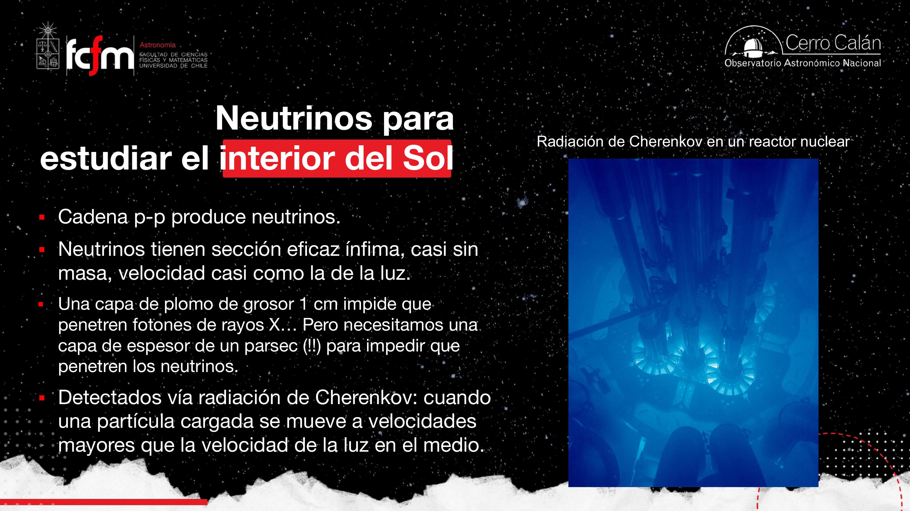
Los primeros experimentos (como el detector de cloro en la mina de oro Homestake, Dakota del Sur) medían tres veces menos neutrinos que lo predicho por los modelos: la teoría esperaba ~1 captura al día entre billones de neutrinos, y se medía ~1 cada 3 días… durante más de 20 años. En astronomía, cuando falta algo se le pone “el problema de X”: el problema de los neutrinos, el problema del litio…
La solución: existen 3 tipos (“sabores”) de neutrinos — electrónico, muónico y tauónico. La fusión solar produce solo neutrinos electrónicos, y los detectores iniciales solo veían ese tipo. Pero el neutrino es una partícula cuántica que existe en superposición de los tres estados (como el gato de Schrödinger, pero con tres opciones) y oscila entre sabores durante el viaje. Tres sabores, un tercio detectado: las cuentas calzaron. Detectores más recientes (como Sudbury, Canadá) capturan los tres tipos y encuentran exactamente el número que predice la teoría, confirmando la oscilación de neutrinos y, de paso, que la fusión nuclear en el núcleo solar funciona como creemos.
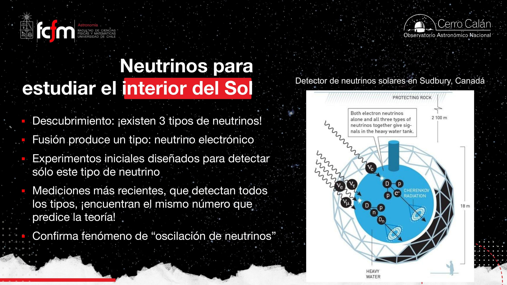
Actividad solar: manchas y tormentas
El magnetismo del Sol en acción: manchas en pares, llamaradas y eyecciones.
Manchas solares
Las manchas solares son regiones de la fotósfera menos calientes (~3.800–4.000 K, contra ~5.800 K del entorno) —“frías” solo en términos relativos—. Duran de horas a meses, rotan junto con el Sol, y son gigantes: en una sola mancha grande caben 10 Tierras.
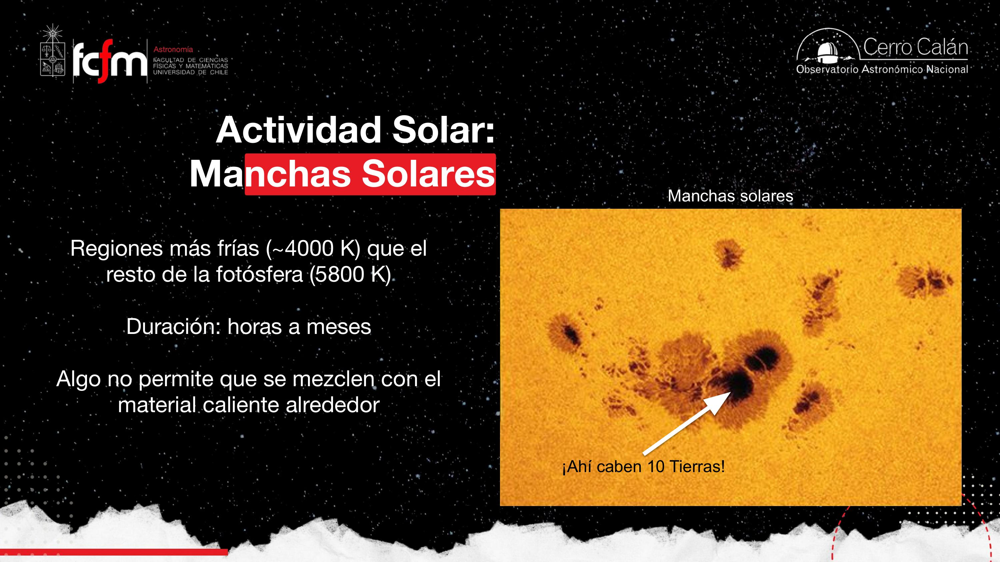
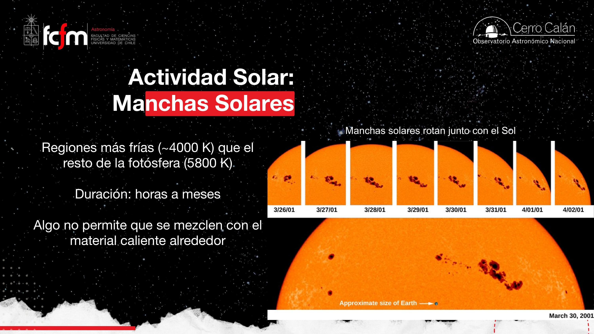
La respuesta es magnética: las manchas están en la base de líneas de campo magnético que sobresalen a través de la fotósfera. El campo atrapa las partículas cargadas y las confina, suprimiendo la convección local: mantiene el gas caliente lejos de la mancha, que por eso se enfría respecto del entorno. Y como las líneas de campo que salen deben volver a entrar, las manchas ocurren usualmente en pares con polaridad magnética opuesta: por una salen las líneas (polo positivo), por la otra entran (polo negativo). Un imán en movimiento sobre la superficie del Sol.
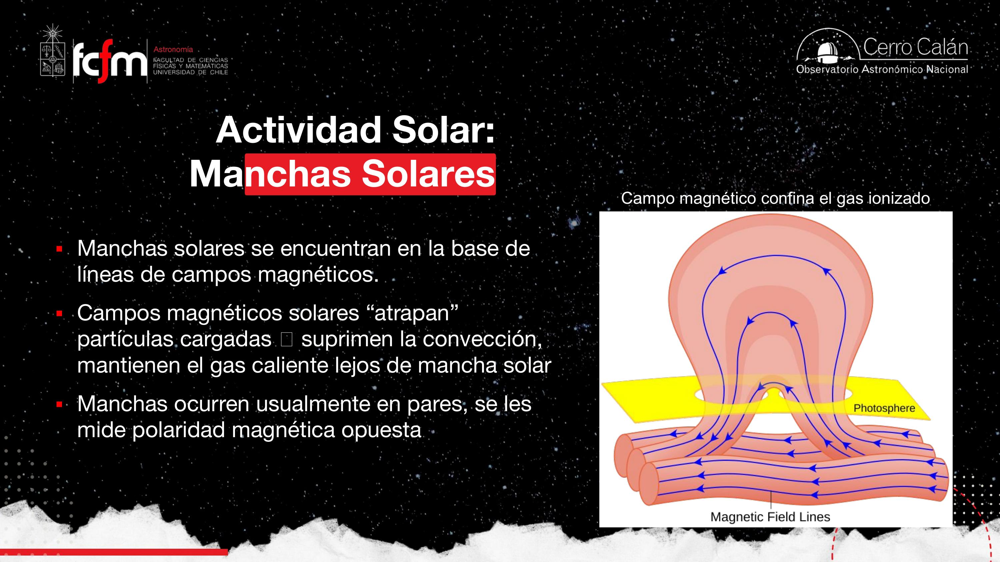
Llamaradas y reconexión magnética
La rotación diferencial del Sol (el ecuador gira más rápido que los polos) enrolla y tensa las líneas de campo hasta formar nudos. La analogía de la clase: una pelota de elásticos que giras y giras; la tensión crece hasta que un elástico se corta y sale disparado. En el Sol, cuando una línea de campo muy tensa se corta se libera una cantidad enorme de energía —una llamarada solar— y luego las líneas se reconectan (a diferencia del elástico). La energía se libera en el corte. Las llamaradas duran de horas a decenas de horas (ninguna dura una semana) y, junto con las nano-llamaradas constantes, son las que calientan cromósfera y corona.
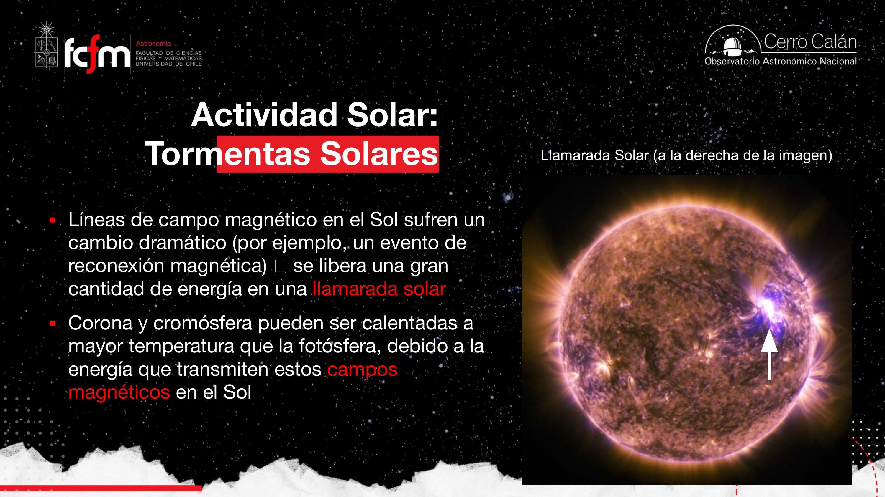
Eyecciones de masa coronal y tormentas geomagnéticas
Las tormentas más potentes producen eyecciones de masa coronal (EMC): plasma y partículas expulsados de la estrella a altísima velocidad y energía. Son los eventos más disruptivos para la vida moderna: las partículas cargadas llegan a la Tierra en cuestión de días, deforman el campo magnético terrestre (nuestra “escudo”) y producen una tormenta geomagnética. Consecuencias posibles: satélites dañados por corrientes inducidas (la ionósfera es donde “viven” los satélites y GPS), comunicaciones de radio interrumpidas y, en eventos extremos, cortes de electricidad.
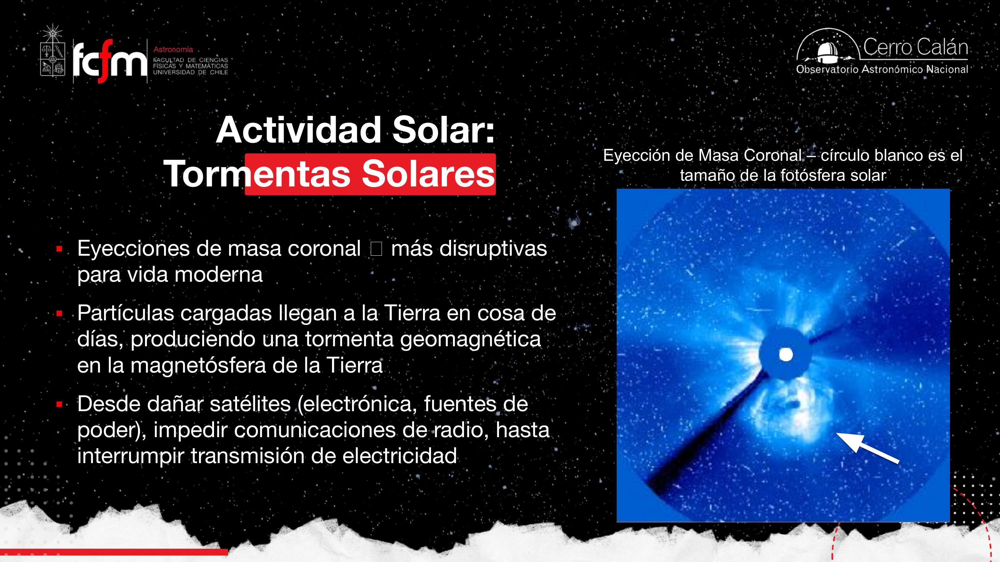
El caso histórico extremo es el evento de Carrington, que dejó fuera de servicio la red de telégrafos por días y produjo auroras visibles en latitudes bajas; hubo llamadas a la policía en ciudades de EE.UU. porque, con el apagón, la gente veía por primera vez la Vía Láctea y creía que “se abría el cielo”. Nota: en clase se dudó de la fecha (“¿años 30, años 40?”); el evento de Carrington fue en realidad en septiembre de 1859. El ciclo solar actual ha sido de los más activos del último tiempo y la infraestructura mundial ha resistido bien.
El ciclo de 11 años y el dínamo de Babcock
Contar manchas desde 1750, y el modelo que explica por qué el Sol invierte sus polos.
El ciclo solar
El número de manchas solares varía con un período de ~11 años: ~5,5 años del mínimo al máximo y otros ~5,5 de vuelta. Los registros llegan hasta ~1750, porque contar manchas no requería telescopios solares sofisticados: se proyectaba el disco del Sol sobre una pantalla y se contaban los puntitos. El mínimo de manchas correlaciona con mínima actividad (menos llamaradas, menos tormentas, menos EMC) — las manchas son el termómetro del magnetismo solar.
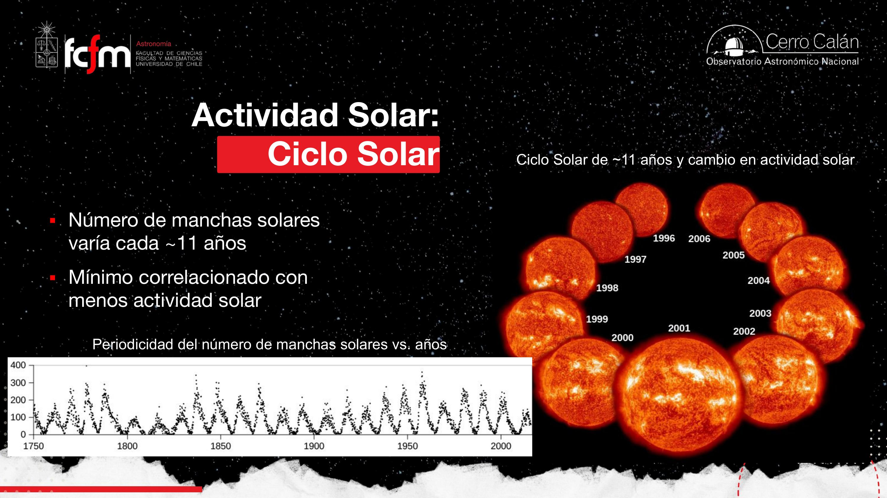
Último mínimo: ~2019–2020 (disco sin manchas). La actividad subió hasta un máximo declarado oficialmente en 2024; al momento de la clase el Sol está recién saliendo del máximo, en fase de descenso: se esperan progresivamente menos manchas, llamaradas y auroras hasta el próximo mínimo.
El dínamo de Babcock
Un dínamo convierte energía cinética en electricidad (una turbina eólica, la dínamo de una bicicleta). El Sol tiene todos los ingredientes: es un plasma ionizado (conductor eléctrico) en movimiento (rotación diferencial + turbulencia convectiva). Ese movimiento genera corrientes (electrones en movimiento) y las corrientes inducen campos magnéticos: el Sol es un imán gigante autoalimentado.
El modelo de dínamo de Babcock explica el ciclo así:
- Fase poloidal: al inicio del ciclo las líneas de campo están ordenadas, saliendo por un polo y entrando por el otro.
- Efecto Ω (Omega): la rotación diferencial —ecuador en ~25 días, polos más lentos— enrolla las líneas alrededor del Sol, formando la letra Ω y creando “enredos” donde el campo se concentra.
- Efecto boya: los tubos de campo concentrado flotan, sobresalen a través de la fotósfera y aparecen las manchas en pares.
- Inversión: las manchas migran con la rotación, arrastran el campo, y al final del ciclo el proceso deja los polos invertidos: cada ~11 años el Sol cambia su polaridad magnética (norte ↔ sur). Para nosotros, sin efectos: solo cambia la dirección de las líneas.
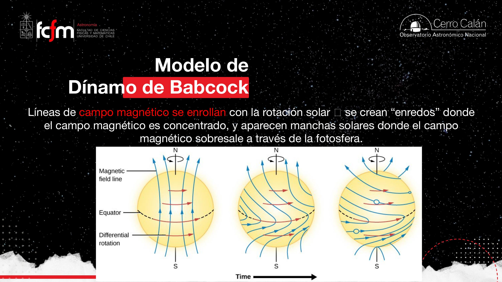
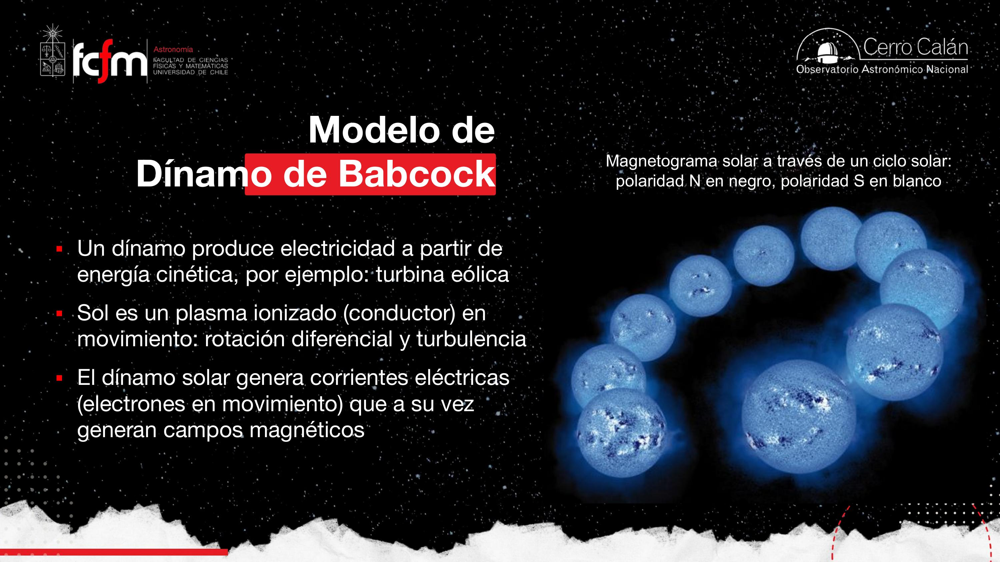
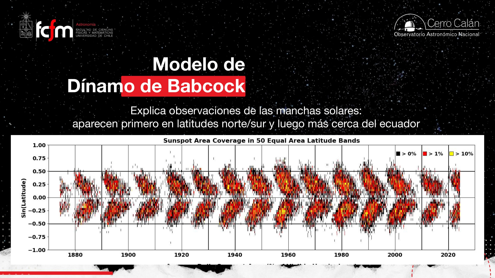
El magnetismo estelar sigue siendo un área poco explorada: entendemos bien el del Sol, pero de estrellas distintas (como las enanas rojas) sabemos casi nada. Además, la convección se modelaba en 1D (“la celda sube o baja”); recién en los últimos años hay simulaciones hidrodinámicas 3D de las celdas convectivas. Herramientas computacionales nuevas → modelos mejores.
Explorar conceptos
Tres widgets para jugar con los números de la clase.
Conceptos clave
Tabla de repaso rápido.
| Concepto | Qué es / valor | Por qué importa |
|---|---|---|
| Núcleo | 0–0,2 R☉; ~15×10⁶ K; muy denso | Única región con fusión H→He (cadena p–p) |
| Zona radiativa | 0,2–0,7 R☉; difusión radiativa | Fotón en random walk: ~170.000 años hasta la superficie |
| Tacoclina | Interfaz radiativa/convectiva (~0,7 R☉) | Cambio de régimen de transporte; clave para el dínamo |
| Zona convectiva | 0,7 R☉ → superficie; celdas convectivas | Origen de la granulación y del movimiento del plasma |
| Fotósfera | ~5.800 K; espesor ~400 km | Superficie visible; los fotones escapan; manchas y granulación |
| Cromósfera | ~10⁴ K; 2.000–3.000 km; emite en UV | Primera capa donde la temperatura vuelve a subir |
| Zona de transición | Decenas de km; salto 10⁴ → 10⁶ K | Aumento brutal de temperatura hacia la corona |
| Corona | ~10⁶ K; ~10⁶ átomos/cm³; >10⁶ km; rayos X | Más caliente que la superficie, por calentamiento magnético |
| Coronógrafo | Máscara que tapa el disco solar | “Eclipse a la fuerza” para estudiar la corona |
| Viento solar | e⁻ y p a ~400 km/s | Auroras, colas de cometas, tormentas geomagnéticas |
| Ecuaciones de estructura | Masa, equilibrio hidrostático, energía, transporte | Modelan la estrella capa por capa; |
| Heliosismología | Oscilaciones solares medidas por Doppler | “Sismología” del interior; confirma los modelos |
| Oscilación de neutrinos | 3 sabores: e, μ, τ; superposición cuántica | Resolvió el déficit de ⅓ en los neutrinos solares |
| Manchas solares | ~4.000 K vs. 5.800 K; en pares, polaridad opuesta | El campo magnético confina el gas y suprime la convección |
| Llamarada / reconexión | Corte y reconexión de líneas de campo tensadas | Libera energía enorme; calienta cromósfera y corona |
| Eyección de masa coronal | Plasma expulsado; llega a la Tierra en días | Tormentas geomagnéticas: satélites, radio, red eléctrica |
| Ciclo solar | ~11 años; mínimo 2019-20, máximo 2024 | Número de manchas ↔ actividad magnética |
| Dínamo de Babcock | Rotación diferencial enrolla el campo (efecto Ω) | Explica manchas, diagrama de mariposa e inversión de polos cada 11 años |
Exámenes de práctica
10 exámenes de 5 preguntas (3 de alternativas autocorregibles + 2 de respuesta escrita).